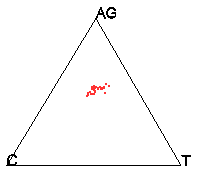
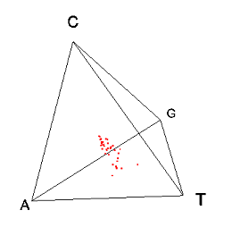
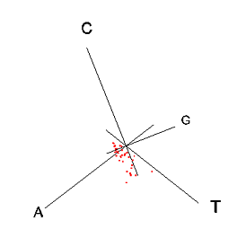

Fig. 1. Example of the de Finetti plot. It models three variables in 2D triangular diagram.
 
Fig. 2. Example of the tetrahedron model. It models four variables in a 3D triangular diagram.
We extended the de Finetti plot (Fig. 1) Cannings and Edwards, 1968) to a tetrahedral plot (Fig. 2) with similar properties (i.e., each observation comprises four variables, a, b, c, and d, where a + b + c + d = 1 and 0 ≤ a, b, c, d ≤ 1). Each axis in the plot starts at the center of a surface at value 0, and finishes at the opposite corner at value 1. We model the four variables in this model to be frequency of nucleotide A, T, G and C in a sequence. Therefore, each sequence can be uniquely represented as a point inside the tetrahedron. For example, a point lying close to the corner T will contain an exceeding large proportion of T compared to A,G and C in that sequence. If the alignment of sequences evolved under compositional stationary condition, we will expect to see all points to be very closely clustered inside the tetrahedron. Thus, visual assessment of the spread of points in the tetrahedron shows the extend of compositional heterogeneity.
Cannings,C., and Edwards,A.W.F. (1968). Natural selection and the de Finetti diagram. Ann. Hum. Genet., 31, 421-428.